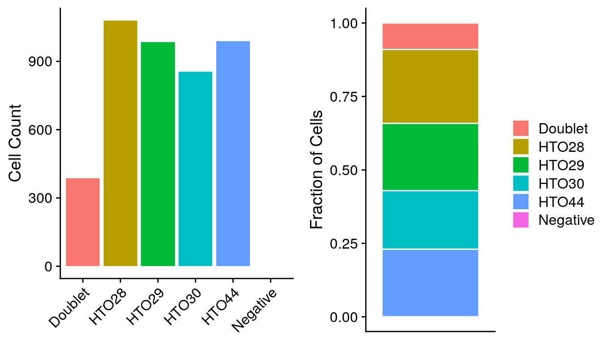
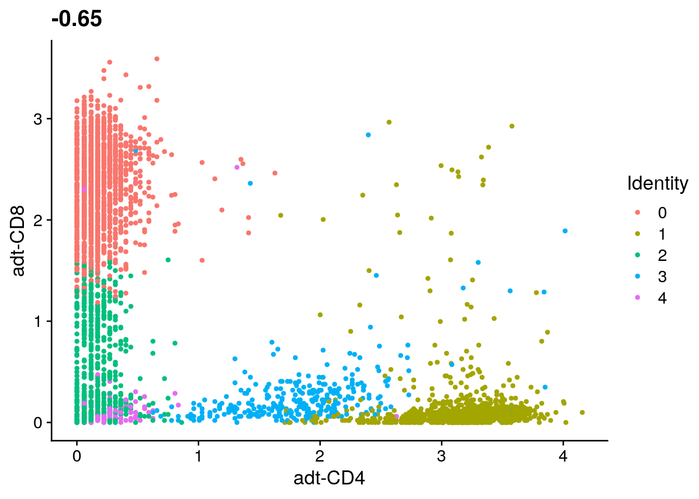
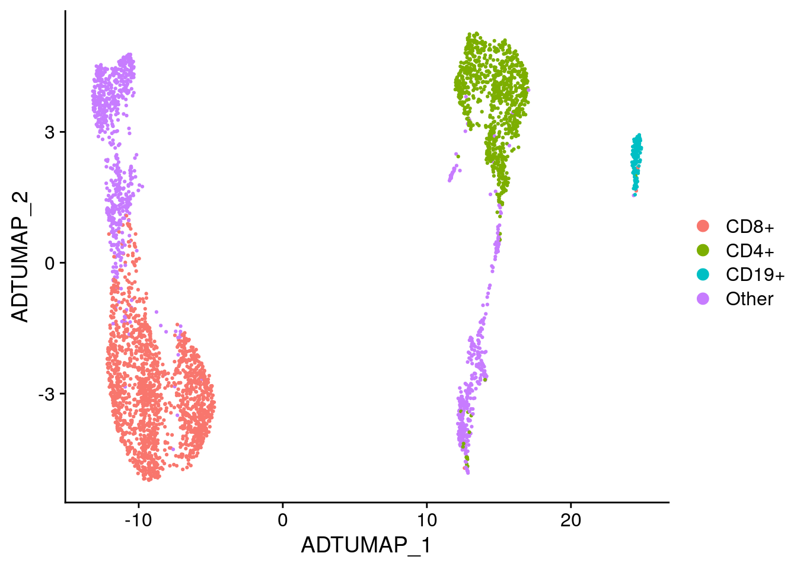

Working with Multi-modal Data
August 15th, 2019
- Creating a Seurat object with multiple assays
- Demultiplexing hashed samples
- Filtering data and assessing quality
- Clustering cells based on gene expression
- Clustering cells based on antibody signal
- Visualizing antibody signal
- Classifying cells based on antibody signal
- Viewing results with the Cell Browser
Creating a Seurat object with multiple assays
Loading the counts matrices
# Data URL
data_url = "https://scrnaseq-workshop.s3-us-west-2.amazonaws.com"
# Import RNA matrix
rna_mtx <- file.path(data_url, "CITEseq_cDNA.csv.gz") %>%
read_csv() %>%
column_to_rownames("X1") %>%
as.sparse()
rna_mtx[1:10, 1:10]#> 10 x 10 sparse Matrix of class "dgCMatrix"
#>
#> MIR1302-2HG . . . . . . . . . .
#> FAM138A . . . . . . . . . .
#> OR4F5 . . . . . . . . . .
#> AL627309.1 . . . . . . . . . .
#> AL627309.3 . . . . . . . . . .
#> AL627309.2 . . . . . . . . . .
#> AL627309.4 . . . . . . . . . .
#> AL732372.1 . . . . . . . . . .
#> OR4F29 . . . . . . . . . .
#> AC114498.1 . . . . . . . . . .# Import ADT matrix
adt_mtx <- file.path(data_url, "CITEseq_ADT.csv.gz") %>%
read_csv() %>%
column_to_rownames("X1") %>%
as.sparse()
rownames(adt_mtx) <- str_c("adt-", rownames(adt_mtx))
adt_mtx[, 1:10]#> 8 x 10 sparse Matrix of class "dgCMatrix"
#>
#> adt-CD14 11 2 14 1 . 1 1 . . 1
#> adt-CD19 9 . 165 295 . 3 6 4 2 1
#> adt-CD3 . 19 79 2 3 6 9 3 3 4
#> adt-CD4 69 360 293 7 159 321 1 7 7 4
#> adt-CD45 . . 3 4 . 1 . . 1 .
#> adt-CD45RA 25 3 246 16 8 5 18 6 4 9
#> adt-CD45RO 6 4 108 6 . 2 1 2 1 3
#> adt-CD8 7 . 36 6 . . 473 21 7 197# Import HTO matrix
hto_mtx <- file.path(data_url, "CITEseq_HTO.csv.gz") %>%
read_csv() %>%
column_to_rownames("X1") %>%
as.sparse()
hto_mtx[, 1:10]#> 4 x 10 sparse Matrix of class "dgCMatrix"
#>
#> HTO28 351 . . . 2 161 . . . .
#> HTO29 6 2 3 1 1 2 2 107 2 .
#> HTO30 . 131 177 60 . . . . 239 155
#> HTO44 1 . . . 122 . 172 . 1 .Creating a Seurat object
# Get list of common cell barcodes
rna_bcs <- colnames(rna_mtx)
adt_bcs <- colnames(adt_mtx)
hto_bcs <- colnames(hto_mtx)
merged_bcs <- rna_bcs %>%
intersect(adt_bcs) %>%
intersect(hto_bcs)
# Create Seurat object
sobj <- rna_mtx %>%
.[, rna_bcs %in% merged_bcs] %>%
CreateSeuratObject(min.cells = 5)
# Add antibody and cell hashing data to Seurat object
sobj[["ADT"]] <- adt_mtx %>%
.[, adt_bcs %in% merged_bcs] %>%
CreateAssayObject()
sobj[["HTO"]] <- hto_mtx %>%
.[, hto_bcs %in% merged_bcs] %>%
CreateAssayObject()
sobj#> An object of class Seurat
#> 15032 features across 4292 samples within 3 assays
#> Active assay: RNA (15020 features)
#> 2 other assays present: ADT, HTO# Normalize HTO counts
sobj <- sobj %>%
NormalizeData(
assay = "HTO",
normalization.method = "CLR" # Centered log-ratio normalization
)Demultiplexing hashed samples
Sample demultiplexing
# Demultiplex samples
# By default HTODemux will look for the "HTO" assay
sobj <- sobj %>%
HTODemux()
sobj@meta.data %>%
head()#> orig.ident nCount_RNA nFeature_RNA nCount_ADT
#> AAACCTGAGACAAAGG SeuratProject 3054 1217 388
#> AAACCTGAGCTACCGC SeuratProject 2411 989 337
#> AAACCTGCACCAGGTC SeuratProject 4182 1394 509
#> AAACCTGCACTCTGTC SeuratProject 3681 1456 43
#> AAACCTGGTATGAAAC SeuratProject 2503 1255 530
#> AAACCTGGTGAGTATA SeuratProject 1241 692 352
#> nFeature_ADT nCount_HTO nFeature_HTO HTO_maxID
#> AAACCTGAGACAAAGG 5 358 3 HTO28
#> AAACCTGAGCTACCGC 8 180 2 HTO30
#> AAACCTGCACCAGGTC 7 163 2 HTO28
#> AAACCTGCACTCTGTC 6 174 2 HTO44
#> AAACCTGGTATGAAAC 6 638 2 HTO28
#> AAACCTGGTGAGTATA 6 71 2 HTO44
#> HTO_secondID HTO_margin HTO_classification
#> AAACCTGAGACAAAGG HTO29 3.211027 HTO28
#> AAACCTGAGCTACCGC HTO29 3.448779 HTO30
#> AAACCTGCACCAGGTC HTO29 2.802755 HTO28
#> AAACCTGCACTCTGTC HTO29 3.148890 HTO44
#> AAACCTGGTATGAAAC HTO29 3.649778 HTO28
#> AAACCTGGTGAGTATA HTO29 2.285112 HTO44
#> HTO_classification.global hash.ID
#> AAACCTGAGACAAAGG Singlet HTO28
#> AAACCTGAGCTACCGC Singlet HTO30
#> AAACCTGCACCAGGTC Singlet HTO28
#> AAACCTGCACTCTGTC Singlet HTO44
#> AAACCTGGTATGAAAC Singlet HTO28
#> AAACCTGGTGAGTATA Singlet HTO44# Create ridge plots showing HTO signal
sobj %>%
RidgePlot(
assay = "HTO",
features = rownames(hto_mtx),
ncol = 2
)
# Rename cell identities with sample names
sobj <- sobj %>%
RenameIdents(
"HTO28" = "PBMC-1",
"HTO29" = "PBMC-2",
"HTO30" = "PBMC-3",
"HTO44" = "PBMC-4"
)
# Add sample names to meta.data table
sobj <- sobj %>%
AddMetaData(
metadata = Idents(sobj),
col.name = "sample"
)EXERCISE: Compare the number of cells with each hash.ID
# Use the meta.data table to compare the number of cells with each hash.ID
# sobj@meta.data %>%ANSWER

Filtering data and assessing quality
Assessing data quality
# Add mitochondrial percentage to meta.data table
sobj <- sobj %>%
PercentageFeatureSet(
assay = "RNA",
pattern = "^MT-",
col.name = "percent_mito"
)
# Create violin plots for gene expression data
sobj %>%
VlnPlot(
features = c("nCount_RNA", "nFeature_RNA", "percent_mito"),
ncol = 3,
pt.size = 0.25
)
sobj %>%
VlnPlot(
features = c(
"nCount_ADT", "nFeature_ADT",
"nCount_HTO", "nFeature_HTO"
),
ncol = 2,
pt.size = 0.25,
log = T
)
EXERCISE: How many cells are left after filtering?
# Filter cells based on number of genes detected, percent mito UMIs, and HTO_classification.global
# filt_sobj <- sobj %>%
# subset(
#
#
#
#
# )ANSWER
#> An object of class Seurat
#> 15032 features across 3644 samples within 3 assays
#> Active assay: RNA (15020 features)
#> 2 other assays present: ADT, HTO#Normalizing gene expression and antibody data
# Normalize expression data
filt_sobj <- filt_sobj %>%
SCTransform(
vars.to.regress = "percent_mito",
variable.features.n = 2000,
verbose = FALSE
)
# Normalize and scale antibody data
filt_sobj <- filt_sobj %>%
NormalizeData(
assay = "ADT",
normalization.method = "CLR" # Centered log-ratio normalization
) %>%
ScaleData(assay = "ADT")Clustering cells based on gene expression
Perform pricipal component analysis
# Perform PCA
filt_sobj <- filt_sobj %>%
RunPCA(verbose = FALSE) # By default only variable features are used for PCA
# Plot standard deviations of principal components
elbow_plot <- filt_sobj %>%
ElbowPlot(ndims = 50)
# Create scatter plot comparing PC-1 and PC-2
PCA_plot <- filt_sobj %>%
DimPlot(reduction = "pca")
plot_grid(
elbow_plot, PCA_plot,
nrow = 1,
rel_widths = c(0.4, 0.6)
)
Cluster cells using gene expression data
# Cluster cells
filt_sobj <- filt_sobj %>%
FindNeighbors(dims = 1:40) %>%
FindClusters(
resolution = 0.6,
verbose = FALSE
)
# Run UMAP
# Use same PCs as clustering, by default reduction = "pca"
filt_sobj <- filt_sobj %>%
RunUMAP(dims = 1:40)
# Find marker genes for each cluster
RNA_markers <- filt_sobj %>%
FindAllMarkers(only.pos = T) %>%
filter(p_val_adj < 0.05)
# Add RNA clusters to meta.data
filt_sobj <- filt_sobj %>%
AddMetaData(
metadata = Idents(filt_sobj),
col.name = "RNA_clusters"
)
# Create UMAP
filt_sobj %>%
DimPlot(reduction = "umap")
Clustering cells based on antibody signal
Cluster cells using antibody signal
# Since there are only a few antibodies, instead of doing PCA just use a standard
# euclidean distance matrix
adt_data <- filt_sobj@assays$ADT@data
adt_dist <- dist(t(adt_data))
# Find clusters using distance matrix
filt_sobj[["adt_snn"]] <- FindNeighbors(adt_dist)$snn
filt_sobj <- filt_sobj %>%
FindClusters(
assay = "ADT",
resolution = 0.2,
graph.name = "adt_snn"
)
# Add ADT clusters to meta.data
filt_sobj <- filt_sobj %>%
AddMetaData(
metadata = Idents(filt_sobj),
col.name = "ADT_clusters"
)Create UMAP using antibody signal
# Run UMAP
filt_sobj <- filt_sobj %>%
RunUMAP(
reduction.name = "adt_umap",
reduction.key = "ADTUMAP_",
graph = "adt_snn"
)
# Create UMAP
filt_sobj %>%
DimPlot(reduction = "adt_umap")
EXERCISE: Which cluster has CD19 as its top marker?
# Identify differentially expressed proteins for each cluster
# filt_sobj %>%
# FindAllMarkers(
#
# )ANSWER
#> p_val avg_logFC pct.1 pct.2 p_val_adj cluster gene
#> 1 0.000000e+00 1.9833363 1.000 0.935 0.000000e+00 0 adt-CD8
#> 2 0.000000e+00 2.5471134 1.000 0.904 0.000000e+00 1 adt-CD4
#> 3 4.599577e-147 1.6981277 0.894 0.349 3.679662e-146 3 adt-CD14
#> 4 2.093009e-103 0.8156108 0.937 0.614 1.674407e-102 3 adt-CD45
#> 5 5.462616e-102 1.3856033 0.987 0.864 4.370093e-101 3 adt-CD45RO
#> 6 9.938762e-80 0.3601482 0.997 0.913 7.951009e-79 3 adt-CD19
#> 7 3.042501e-10 0.4666591 0.997 0.981 2.434001e-09 3 adt-CD45RA
#> 8 4.685913e-82 3.4338342 1.000 0.918 3.748730e-81 4 adt-CD19
#> 9 1.807485e-20 0.4287725 0.992 0.982 1.445988e-19 4 adt-CD45RA
#> 10 7.557375e-18 0.5735419 0.984 0.870 6.045900e-17 4 adt-CD45ROVisualizing antibody signal
Overlay antibody signal on UMAPs
# Set active.assay to ADT
filt_sobj@active.assay <- "ADT"
# Overlay antibody signal on gene expression UMAP
filt_sobj %>%
FeaturePlot(
reduction = "umap",
features = c("adt-CD3", "adt-CD4", "adt-CD8", "adt-CD19"),
cols = c("#3288bd", "#bd0026")
)
# Overlay antibody signal on antibody UMAP
filt_sobj %>%
FeaturePlot(
reduction = "adt_umap",
features = c("adt-CD3", "adt-CD4", "adt-CD8", "adt-CD19"),
cols = c("#3288bd", "#bd0026")
)
Create ridge plots
# Set ADT as the active assay
filt_sobj@active.assay <- "ADT"
# Create ridge plot
filt_sobj %>%
RidgePlot(features = c(
"adt-CD14", "adt-CD45",
"adt-CD19", "adt-CD3",
"adt-CD4", "adt-CD8"
))
Create heatmaps
filt_sobj %>%
DoHeatmap(
features = rownames(filt_sobj),
angle = 0
) +
NoLegend()
Classifying cells based on antibody signal
Identify CD19+ cells
# Set ADT as the active assay
filt_sobj@active.assay <- "ADT"
# Plot CD3 and CD19 signal
filt_sobj %>%
FeatureScatter("adt-CD3", "adt-CD19")
# Identify CD19+ cells using antibody signal
CD19_cells <- filt_sobj %>%
subset(`adt-CD19` > 2.5 & `adt-CD3` < 1) %>%
Cells()
# Set cell identities
labeled_sobj <- filt_sobj %>%
SetIdent(value = "Other") %>%
SetIdent(
value = "CD19+",
cells = CD19_cells
)
labeled_sobj@active.ident %>%
head()#> AAACCTGAGACAAAGG AAACCTGCACCAGGTC AAACCTGGTATGAAAC AAACGGGTCACCTTAT
#> Other Other Other Other
#> AAAGATGAGTGTACCT AAAGATGCACAGCCCA
#> Other Other
#> Levels: CD19+ Other# Label UMAP with new cell identities
labeled_sobj %>%
DimPlot(reduction = "adt_umap")
Filter cells using CellSelector()
# Plot CD3 and CD19 signal
CD19_plot <- filt_sobj %>%
FeatureScatter("adt-CD3", "adt-CD19")
CD19_plot
# Identify CD19+ cells using antibody signal
labeled_sobj <- filt_sobj %>%
SetIdent(value = "Other")
labeled_sobj <- CellSelector(
plot = CD19_plot,
object = labeled_sobj,
ident = "B cells"
)
labeled_sobj@active.ident %>%
head()
# Label UMAP with new cell identities
labeled_sobj %>%
DimPlot(reduction = "adt_umap")EXERCISE: Identify CD4+ and CD8+ cells
# Plot CD4 and CD8 signal
# filt_sobj %>%
# FeatureScatter("adt_CD4", "adt_CD8")
# Identify CD4+ and CD8+ cells using antibody signal
# Set cell identities
# Label UMAP with new cell identitiesANSWER

Viewing results with the Cell Browser
Merge gene expression and antibody matrices
# Combine RNA and ADT matrices
merged_sobj <- labeled_sobj
RNA_data <- merged_sobj@assays$SCT@data
ADT_data <- merged_sobj@assays$ADT@data
merged_data <- rbind(RNA_data, ADT_data)
# Add merged matrix to Seurat object
merged_sobj@assays$SCT@data <- merged_data
# Set active assay
merged_sobj@active.assay <- "SCT"Create Cell Browser files
# Create Cell Browser directories
dir.create(
path = "cellbrowser/SCT",
recursive = T
)
# Export marker genes
RNA_markers %>%
rename(score = p_val_adj) %>%
select(cluster, gene, score) %>%
write_tsv("cellbrowser/SCT/RNA_markers.tsv")
# Create Cell Browser files for gene expression data
merged_sobj %>%
ExportToCellbrowser(
dir = "cellbrowser/SCT",
reductions = "umap",
dataset.name = "SCT",
markers.file = "cellbrowser/SCT/RNA_markers.tsv",
sample = "Sample",
RNA_clusters = "Cluster",
ADT_clusters = "ADT cluster",
cell_label = "Cell label",
nCount_RNA = "RNA UMI count",
nFeature_RNA = "Gene count",
percent_mito = "Percent mito UMIs",
nCount_ADT = "ADT UMI count",
nFeature_ADT = "Antibody count",
nCount_HTO = "HTO UMI count",
nFeature_HTO = "HTO count"
)# Create Cell Browser directories
dir.create(
path = "cellbrowser/ADT",
recursive = T
)
# Export marker genes
ADT_markers %>%
rename(score = p_val_adj) %>%
select(cluster, gene, score) %>%
write_tsv("cellbrowser/ADT/ADT_markers.tsv")
# Create Cell Browser files for antibody data
merged_sobj %>%
ExportToCellbrowser(
dir = "cellbrowser/ADT",
reductions = "adt_umap",
dataset.name = "ADT",
markers.file = "cellbrowser/ADT/ADT_markers.tsv",
sample = "Sample",
ADT_clusters = "Cluster",
RNA_clusters = "RNA cluster",
cell_label = "Cell label",
nCount_RNA = "RNA UMI count",
nFeature_RNA = "Gene count",
percent_mito = "Percent mito UMIs",
nCount_ADT = "ADT UMI count",
nFeature_ADT = "Antibody count",
nCount_HTO = "HTO UMI count",
nFeature_HTO = "HTO count"
)Build Cell Browser session
mkdir -p cellbrowser/html
cbBuild \
-i cellbrowser/SCT/cellbrowser.conf \
-i cellbrowser/ADT/cellbrowser.conf \
-o cellbrowser/html